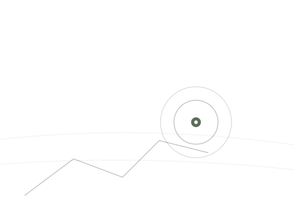

位置与到店
聿禾國乐
在深圳南山
地图平台搜索品牌名，即可查看位置并导航到店。

深圳
NANSHAN
所在区域
广东省深圳市南山区
聿禾國乐古筝艺术中心位于深圳市南山区。
如何找到
如何找到聿禾國乐
通过常用地图平台即可查看所在位置。
- 打开常用地图平台。
- 搜索「聿禾國乐」。
- 查看深圳南山所在位置。
位置与联系
基本信息
- 品牌
- 聿禾國乐古筝艺术中心
- 运营主体
- 聿禾文化（深圳）有限公司
- 所在城市
- 深圳
- 所在区域
- 南山
- 业务方向
- 古筝
- 服务对象
- 成人 / 少儿
- 地图搜索
- 聿禾國乐